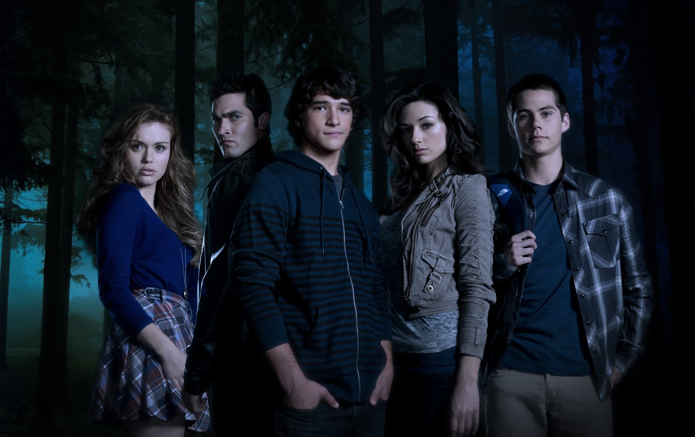

The series revolves around social outcast Scott McCall, a high school student living in the town of Beacon Hills. Scott's life drastically changes when he is bitten by a werewolf the night before sophomore year, becoming one himself. He must henceforth learn to balance his problematic new identity with his day-to-day teenage life.

Even though Teen Wolf doesn't have the best special effects ever (I don't even know why because it's really good), it is one of the best T.V. series I've ever watched. You fall in love with all the characters, and the story is amazing; one that will surely keep you on the edge of your chair. The first chapters will probably make you think the series is the typical story of a guy who becomes a werewolf and plays hero. Well; it's not. This series has a lot of fantastic creatures, and it's a different plot from all the werewolf stories that already exist. The story is so amazing, it will make you yell at the T.V., cry and laugh. If you get through the first chapters, there's no going back; you fall in love with everything.
I mean, just look at this cast: